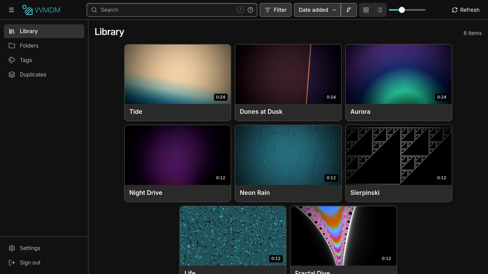

A self-hosted video library. Point it at your folders and watch everything in the browser. Your files are never changed.

Thumbnails, hover clips and seek frames, made for every video.
Pick up where you stopped, on any device.
Files the browser can't play are converted as they stream.
Organize the library without renaming a file.
Download the zip, unzip it and run VVMDM.exe. FFmpeg is included.
Download for Windowsdocker run -p 8080:8080 \
-v /path/to/videos:/media:ro \
-v /path/to/vv-data:/data \
ghcr.io/syudead/vvSign in with [DEMO USERNAME] / [DEMO PASSWORD]. It resets when idle.